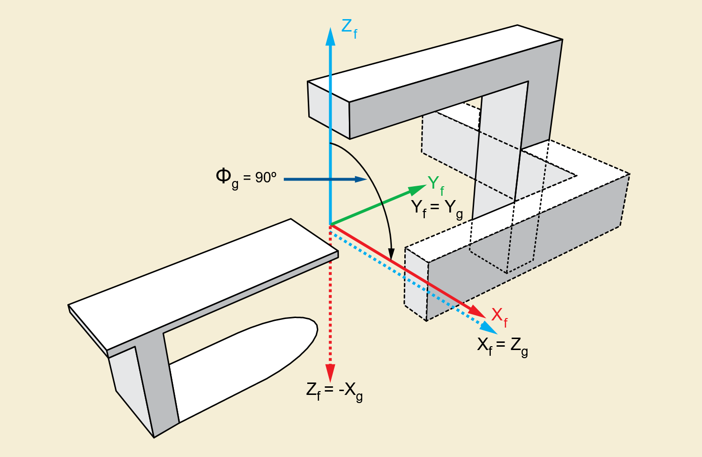

Images captured via an EPID (MV) imager mapped to the isoplane to support proper interpretation in the
RT planning space. Coordinates are calculated in the
IEC GANTRY coordinate system
as shown in
the image below. This coordinate system rotates with the gantry; A viewer viewing from the
beam's eye view is looking down the Z axis. This makes all calculations independent of
gantry angle.

DICOM pixel coordinates are defined at the center of individual pixels, and the origin (x=0, y=0) is at the top-left corner of the image. The isoplane's origin is defined as the center of the image plane. Most EPID devices have an even number of rows and columns, which means that the isoplane origin is between pixels both vertically and horizontally.
The scaling ratio defined by the beam's divergence is: $$divergence = { RTImageSID \over RadiationMachineSAD } $$ The center of the image's top left corner pixel in isoplane coordinates in mm is below. Note that the $Y$ axis is negated to make the coordinate system more similar to RTPLAN (world) coordinates, with both coordinates in the top left being negative.: $$ TopLeft = RTImagePosition_X / divergence, -RTImagePosition_Y / divergence$$ The X and Y isoplane positions are calculated from the X and Y pixel positions; $$ iso_X = {{x \times ImagePlanePixelSpacing_X} \over divergence } + TopLeft_X $$ $$ iso_Y = {{y \times ImagePlanePixelSpacing_Y} \over divergence } + TopLeft_Y $$